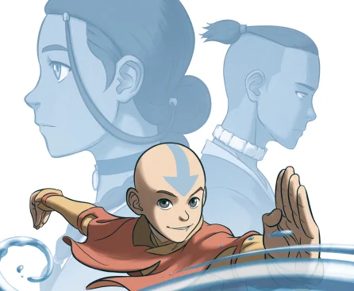

2005
Season 1
Avatar: The Last Airbender
Era of Avatar Aang
|
TV/Streaming
The long-lost Avatar, Aang, is found in an iceberg by siblings Katara and Sokka. Aang learns he’s the last of the Air Nomads and has only months to stop a war waged by the Fire Nation for 100 years; he must master all four elements to save the world.
WATCH